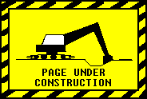

Hi, I'm Katie. Welcome to my internet abode. I recently graduated from Carnegie Mellon University, where I studied information systems.
While I was there, I made an iPhone app with some friends using Spotify's Web API and iOS SDK.
Previously, I worked as a product designer at a (then seed-stage, now defunct) startup called Quilt.
I designed features, made prototypes, and conducted user research + usability testing.
While the Quilt app is no longer available for download, you can read about it in press coverage from Bustle or TechCrunch.
When I'm not at a computer, I enjoy kayaking and playing bass guitar.
I'm a proud member of The National Puzzlers' League and a lifelong lover of stop-motion animation.

This is a living document, meaning that it is constantly evolving.
I may sometimes work with the garage door up.
Please pardon the metaphorical dust.
an informal colophon
This website is written in pure HTML + CSS.
To be clear, I have nothing against using frameworks or libraries to accomplish something; I just prefer to use simple tools when possible, because they often stand the test of time.
Plus, the best way to manage dependencies is to minimize them.